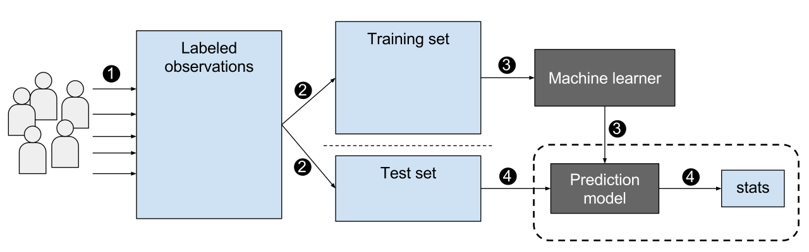
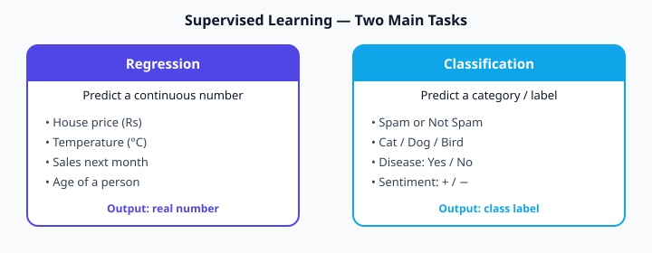

Module 4 — Basic AI and ML
Supervised Learning · Decision Trees · Perceptron & Neural Nets · Model Selection

Supervised learning in a nutshell — labeled examples teach the model (Wikimedia)

Regression predicts a number · Classification predicts a label
Linear regression — tiny numerical example
Predict exam score from hours studied. Data:
Hours (x) | Score (y)
1 | 50
2 | 60
3 | 70
4 | 80Perfect line: \( y = 10x + 40 \). For 5 hours → predicted score = 10×5 + 40 = 90.
We want P(pass | hours). Logistic function squeezes any number into (0, 1):
If z = 2 → σ(2) ≈ 0.88 (88% chance of pass). Threshold 0.5 → predict “Pass”.
k-Nearest Neighbours (KNN) — intuition
To classify a new point, look at the k closest training points and take a majority vote. Distance usually Euclidean:
New point at (2, 2). Neighbours:
Point A (1,1) class=Red distance=√2≈1.41
Point B (3,2) class=Blue distance=1
Point C (2,3) class=Red distance=1
Point D (5,5) class=Blue distance=√18≈4.24Three nearest: B (Blue), C (Red), A (Red) → majority Red.
Naive Bayes — quick idea
Uses Bayes’ theorem (Module 1) assuming features are independent. Very fast for text (spam filters).
Support Vector Machine (SVM) — margin idea
Finds the line (hyperplane) that separates classes with the largest margin. Support vectors are the points closest to the boundary.
Decision Trees & Ensemble Models
Unit 2 · Trees, Random Forests, Boosting
How a decision tree works
Ask a sequence of yes/no questions about features until you reach a leaf (prediction).
Is hours ≥ 3?
├── Yes → Is previous_score ≥ 60?
│ ├── Yes → Predict Pass
│ └── No → Predict Fail
└── No → Predict FailNode has 4 samples: 3 Pass, 1 Fail.
Pure node (all Pass) → Gini = 0. Tree algorithms pick splits that reduce Gini the most.
Ensemble methods
- Bagging / Random Forest — many trees on random subsets; average or vote. Reduces variance.
- Boosting (AdaBoost, Gradient Boosting, XGBoost) — trees trained sequentially, each fixing errors of the previous. Often highest accuracy on tabular data.
Perceptron & Neural Networks
Unit 3 · From single neuron to multi-layer nets

Typical CNN architecture (convolution → pooling → fully connected) — Wikimedia
The perceptron (single neuron)
Inputs x₁, x₂, … → multiply by weights w₁, w₂, … → add bias b → activation function → output.
x = [0.5, 1.0], w = [0.4, −0.2], b = 0.1, activation = step (1 if z≥0 else 0)
- z = 0.4×0.5 + (−0.2)×1.0 + 0.1 = 0.2 − 0.2 + 0.1 = 0.1
- σ(0.1) = 1 (because 0.1 ≥ 0)
Multi-layer network
Stack layers of neurons. Hidden layers learn intermediate representations. Training uses the same gradient descent you practised in Module 1 (back-propagation computes the gradients efficiently).
3Blue1Brown — But what is a neural network? (visual foundation)
Model Selection — Bias, Variance, Metrics
Unit 4 · Bias-variance · Evaluation metrics · Confusion matrix
Bias–Variance trade-off
- High bias (underfit) — model too simple, misses patterns (straight line on curved data).
- High variance (overfit) — model too complex, memorizes noise, fails on new data.
- Goal: sweet spot that generalises.
Confusion matrix (binary classification)
Predicted Yes Predicted No
Actual Yes True Positive False Negative
Actual No False Positive True NegativeTP=40, FP=10, FN=5, TN=45
- Accuracy = (TP+TN)/total = 85/100 = 0.85
- Precision = TP/(TP+FP) = 40/50 = 0.80
- Recall = TP/(TP+FN) = 40/45 ≈ 0.89
- F1 = 2 · (P·R)/(P+R) ≈ 0.84
A model that fits the training data almost perfectly but fails on new data is suffering from:
Module 4 — Key takeaways
- Supervised = learn from labeled examples (regression or classification).
- KNN, Naive Bayes, SVM, Trees, Forests, Boosting are classic baselines.
- A neuron computes weighted sum + activation; networks stack many neurons.
- Always evaluate with the right metric and watch bias–variance.